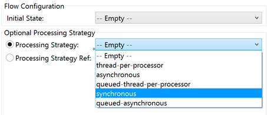
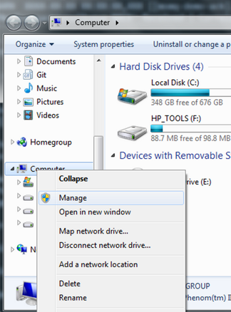
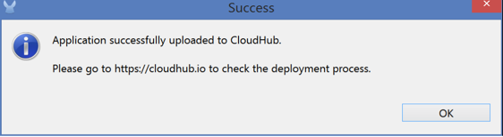
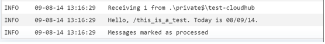

MSMQ Connector User Guide
The Microsoft Message Queuing (MSMQ) connector uses a typical client-server architecture with two tiers, the connector or client running in the Mule ESB, and the Windows Gateway running on the server side. The latter exposes an HTTP Web API for sending or receiving messages from MSMQ.
| Important: Install the Windows Gateway Service first before installing and configuring MSMQ. |
The following is a high-level diagram of the solution architecture:

For more information, see the Windows Gateway Services Guide.
Invalid Message Processing
Unreadable messages are moved to the invalid-queue-name subqueue. You can change this queues name using the Windows Gateway service configuration file. You can also change the timeout for invalid messages for when a payload of a message is parsed with an incorrect formatter.
1
2
3
4
5
<!-- The name of the invalid messages sub-queue -->
<add key="invalid-queue-name" value="Invalid"/>
<!-- Time in seconds for invalid messages before being sent to dead-letter queue -->
<add key="invalid-message-timeout" value="86400"/>
Enable Exactly-Once and In-Order Support
To enable Exactly-Once and In-Order (EOIO) support, you must select the flow containing the MSMQ connector in Anypoint Studio and set the default operation Processing Strategy to synchronous. Otherwise, the connector processes messages as they are received in the ESB and ignores the original order in the queue.

This setting appears in the XML as:
1
<flow name="myMSMQFlow" doc:name="myMSMQFlow" processingStrategy="synchronous">
Primary Use Cases
The MSMQ connector supports two primary use cases:
-
Sends (HTTP POST) a single message to MSMQ
-
Receives (HTTP GET) one or more messages from MSMQ
HTTP POST Scenario
In the POST scenario, Mule ESB uses the connector to send a raw representation of the Mule Message in the current flow to MSMQ using HTTP to the Windows Gateway. The message is sent as an HTTP POST. The payload of the HTTP request is the serialized payload of the Mule message (binary or text). The Web API runs on the Windows Gateway and forwards the message to a queue using MSMQ.
The following messages show the structure of the HTTP POST request.
HTTP GET Scenario
In the GET scenario, Mule ESB uses the connector to receive one or more messages from MSMQ. This is done as an HTTP GET to the Windows Gateway. The Web API runs in the gateway and returns the available messages in a MSMQ queue. The messages are returned in a single HTTP response using a MIME multipart/mixed content type.
The following messages illustrate the structure of the HTTP GET request.
GET Request Message
1
2
3
4
GET: https://localhost:9333/msmq?count=50
Authorization: mule test-token
Mule-Msmq-Queue-Name: .\private$\out
Mule-Api-Version: 1
GET Response Message
1
2
3
4
5
6
7
8
9
10
11
12
13
14
15
16
17
18
19
20
21
22
23
24
25
26
27
28
29
30
Transfer-Encoding: chunked
Content-Type: multipart/mixed; boundary="47c7462b-f831-48f5-aed2-a561ef31dcc6"
28
--47c7462b-f831-48f5-aed2-a561ef31dcc6
218
Content-Type: application/octet-stream
mule-msmq-acknowledgement-type: None
mule-msmq-acknowledgement: None
mule-msmq-attach-sender-id: True
mule-msmq-body-type: 0
mule-msmq-connector-type: 0
mule-msmq-correlation-id: 00000000-0000-0000-0000-000000000000\0
mule-msmq-id: 22af009e-3b1b-4173-ad7f-34b060a158fc\6145
mule-msmq-label:
mule-msmq-lookup-id: 288230376151717889
mule-msmq-message-type: Normal
mule-msmq-priority: Normal
mule-msmq-source-machine: win-dt3v2pm5d7l
mule-msmq-extension:
mule-msmq-app-specific: 0
11
THIS IS A MESSAGE
2C
--47c7462b-f831-48f5-aed2-a561ef31dcc6--
0
The HTTP headers used for sending and receiving messages to and from the Gateway service are discussed more in detail later in this document.
Two-Phase Commit
The MSMQ connector uses a two-phase protocol to ensure zero-message-loss communication with the gateway.
In a traditional scenario, after a message is read in the gateway, it is deleted from the queue. If there is a connection failure or another issue in the ESB that prevents the message from being read, that message is lost.
In a scenario with a two-phase commit protocol, the messages read from the main queue are kept in a sub-queue as backup. After the connector receives a copy of the message, it sends an additional request to the gateway to remove the message from the sub-queue. When this commit action is not completed, the message remains in the sub-queue. After a period of time, messages in the subqueue, considered as orphans, are moved back to their parent queue where they are retried. To be clear, this mechanism should not be affected by external exceptions happening in the flow unless the flow is interrupted before the commit phase is completed.
Message Timeouts
Among different methods, MSMQ messages provide two properties that are useful to grant reliability of information:
-
timeToReachQueue. The maximum number of seconds a message can take to reach the MSMQ server after its received in the gateway. The default is to not time out (InfiniteTimeout).
-
timeToBeReceived. The number of seconds a message can stay in the queue before it dequeues for a third party application. The default is to not time out (InfiniteTimeout).

| If either property times out, the message moves to the dead-letter queue. |
Specifying values for the properties:
1
2
3
4
5
6
<msmq:send
config-ref="MSMQ"
messageFormatter="ActiveXMessageFormatter"
doc:name="MSMQ"
timeToBeReceived="0"
timeToReachQueue="0" />
Both properties can be set in the connector configuration and are read by the Windows Gateway. If you specify a value of zero (0), the default value is assumed (InfiniteTimeout).
Security Considerations
The authentication of the MSMQ connector is handled by a security token included in the HTTP Authorization header. This token is included on every HTTP request to the Gateway using the Mule scheme:
1
2
3
4
GET: https://localhost:9333/msmq?count=50
Authorization: mule test-token
Mule-Msmq-Queue-Name: .\private$\out
Mule-Api-Version: 1
Configure the token on the connector and also in the Gateway configuration file. The following shows how the token is configured on both sides:
1
2
3
<msmq:config name="MSMQ" doc:name="MSMQ" accessToken="test-token" rootQueueName=".\private$\qout" serviceAddress="localhost:9333">
<msmq:connection-pooling-profile initialisationPolicy="INITIALISE_ONE" exhaustedAction="WHEN_EXHAUSTED_GROW"/>
</msmq:config>
User Authentication
The user executing the call on behalf of the connector is authenticated through two custom HTTP headers, mule-impersonate-username and mule-impersonate-password.
When using user authentication, the queue in MSMQ must also be marked to require authentication. These two headers represent the Windows credentials of an existing user in the Active Directory forest where the Windows Gateway service is running, or a local account on the machine hosting the service. When these HTTP headers are included in an HTTP Request, the Windows Gateway service authenticates and impersonates this user before queuing / dequeuing a message from MSMQ. This provides the ability to configure the correct access control list permissions on the queue using Windows credentials.
The following HTTP request example illustrates how to pass these two headers from the connector to the Gateway:
1
2
3
4
5
6
GET: https://localhost:9333/msmq?count=50
Authorization: mule test-token
Mule-Impersonate-Username: domain\myuser
Mule-Impersonate-Password: password
Mule-Msmq-Queue-Name: .\private$\out
Mule-Api-Version: 1
Note: The connector and the gateway use SSL to protect all the HTTP communications.
Queue Permissions
To use queue permissions, mark the queue to require authentication. In addition, the connector must send the Mule-Impersonate-Username and Mule-Impersonate-Password headers in the HTTP request message to impersonate the call; otherwise the account impersonating the host is used (the user impersonating the Windows service or the application pool if the gateway is hosted in IIS).
Note: A Windows user must have logged in for at least the first time before using authenticated queues. When a user logs in for the first time, Windows creates a users profile, which must exist for the user to use authenticated queues.
The following table shows the permissions required for sending or receiving a message from a queue:
Operation |
Permissions |
Receive |
Receive Message, Peek Message |
Send |
Send Message, Peek Message, Get Properties |
In both cases, Peek Message is only used for testing the connection. This permission can be removed if testing the connection is not required.
Note: When MSMQ is installed in a machine not joined to a Windows Domain, it works in Workgroup Mode. In this mode, authenticated queues are not supported and therefore the queue permissions can not be used either.
Message Serialization and Formatting
The Windows Gateway service does not use an MSMQ formatter unless it is specified by the connector. Therefore, a message sent in the HTTP request payload is stored in raw form in the body of the MSMQ message. However, this behavior can be overridden by setting a Message Formatter in the connector. A single formatter is supported out of the box: ActiveXMessageFormatter.
The following example illustrates how to set the formatter in an MSMQ connector:
1
<msmq:receive config-ref="MSMQ" doc:name="MSMQ (Streaming)" pollingPeriod="3000" messageFormatter="ActiveXMessageFormatter" />
When a message formatter is set on the connector, an additional HTTP header Mule-Msmq-Formatter is sent to the Windows Gateway. The gateway uses that formatter to serialize and deserialize the message when it enqueues or dequeues from MSMQ.
For the ActiveXMessageFormatter, the gateway also uses the Content-Type set by the connector in the HTTP request message:
| Content-Type | Description |
|---|---|
` plain/text ` |
The connector sets this when the payload of the current Mule Message is a string. When set, the gateway sets the body stream of the MSMQ message as a string. Other applications can read this message directly as a string. An MSMQ connector receiving this message sets the payload of the Mule Message to a string so that a converter is not required. |
|
Set when the payload is a byte array. The message is stored as a stream of bytes. |
Configuration of the msmq:receive Element
The msmq:receive element is used in the primary scenario for receiving one or more messages from the Gateway.
This following table shows the properties in this element:
Property |
Usage |
queueName |
Queue name in UNC path or FormatName notation. See the Queue Names section for more information. Overrides the queue name set in the Global element. Optional. |
pollingPeriod |
Interval in milliseconds used by the connector for polling the configured queue in MSMQ. Optional. |
messageCount |
Maximum number of messages to retrieve in a single batch. Optional. |
userName |
The name of the user that is used to impersonate the call when accessing MSMQ from the Gateway. Overrides the user name set in the Global element. Optional. |
password |
The password of the user that will be used to impersonate the call when accessing MSMQ from the Gateway. Overrides the password set in the Global element. Optional. |
messageFormatter |
The message formatter to be used in MSMQ for serializing and deserializing the message. Optional. |
Configuration of the msmq:send Element
The msmq:send element is used in the primary scenario for sending one message to the Gateway.
This following table shows the properties in this element:
Property |
Usage |
queueName |
Queue name in UNC path or FormatName notation. See the Queue Names section for more information. Overrides the queue name set in the Global element. Optional. |
userName |
The name of the user thats used to impersonate the call when accessing MSMQ from the Gateway. Overrides the user name set in the Global element. Optional. |
password |
The password of the user thats used to impersonate the call when accessing MSMQ from the Gateway. Overrides the password set in the Global element. Optional. |
messageFormatter |
The message formatter to be used in MSMQ for serializing and deserializing the message. Optional. |
payload |
The message payload to be sent to the Gateway. Optional |
Queue Names (Public, Private, and Clustered)
The MSMQ connector supports private and public queues. Private queues are queues that are not published in Active Directory and are displayed only on the local computer that contains them.
The following schemes are supported:
-
Path name:
ComputerName\private$\QueueName -
Path name on local computer:
\private$\QueueName -
Direct format name:
DIRECT=ComputerAddress\PRIVATE$\PrivateQueueName -
Private format name:
PRIVATE=ComputerGUID\QueueNumber
Public queues are queues that are published in Active Directory.
Public format names contain the string PUBLIC= followed by the identifier assigned to the queue when it was created. This identifier is the GUID listed for the queue object in the Active Directory.
The following is the general format used to reference a public queue and its associated queue journal:
-
PUBLIC=QueueGUID -
PUBLIC=QueueGUID;JOURNAL
The connector also supports private queues hosted in a failover cluster or also known as an MSMQ cluster. The queues are private to the cluster and referenced with the following format:
ClusterName\private$\QueueName
Supported Message Properties
The connector allows passing or receiving properties to and from the MSMQ message. Those properties are set in the current Mule Message and passed to the Windows Gateway as custom HTTP headers. The following message illustrates how the connector creates a new MSMQ message with a value CustomLabel for the label property:
1
2
3
4
5
6
POST: https://localhost:9333/msmq
Authorization: mule test-token
Mule-Msmq-Queue-Name: .\private$\qout
Mule-Api-Version: 1
Mule-Msmq-Label: CustomLabel
Body: THIS IS A SAMPLE MESSAGE
The following table summarizes all supported properties on the receive operation, and the mapping of the HTTP headers.
Property |
HTTP header |
Usage |
msmq.acknowledgement.type |
msmq-acknowledgement-type |
Sets the type of acknowledgment message to return to the sending application. |
msmq.acknowledgement |
mule-msmq-acknowledgement |
Sets the queue that receives the acknowledgement messages that Message Queuing generates. |
msmq.attach.sender.id |
mule-msmq-attach-sender-id |
Gets a value that indicates whether to attach the sender ID to a message. |
msmq.body.type |
mule-msmq-body-type |
Gets the type of data that the message body contains. |
msmq.connector.type |
mule-msmq-connector-type |
Gets a value that indicates that some message properties typically set by Message Queuing were set by the sending application. |
msmq.correlation.id |
mule-msmq-correlation-id |
The message identifier that references the original message. This ID is used to acknowledge, report, and respond to messages. Supported format: |
msmq-id |
mule-msmq-id |
The messages unique identifier, which is generated by Message Queuing. |
msmq.label |
mule-msmq-label |
Gets an application-defined unicode string that describes the message. |
msmq.lookup.id |
mule-msmq-lookup-id |
One of the System.Messaging.MessagePriority values, which represent the priority levels of non-transactional messages. The default is Normal. |
msmq.message.type |
mule-msmq-message-type |
Gets the type of the message retrieved from the queue, which can be Normal, Acknowledgement, or Report. |
msmq.priority |
mule-msmq-priority |
Gets or sets the message priority, which indicates where to place a message in the queue. |
msmq.extension |
mule-msmq-extension |
Sets additional, application-defined information associated with a message. Encode this as base64. |
msmq.app.specific |
mule-msmq-app-specific |
Sets additional, application-specific information. |
The following table summarizes all supported properties on the send operation, and the mapping with the HTTP headers.
Property |
HTTP header |
Usage |
msmq.body.type |
mule-msmq-body-type |
Sets the type of data that the message body contains. |
msmq.label |
mule-msmq-label |
Sets an application-defined unicode string that describes the message. |
msmq.acknowledgement.type |
msmq-acknowledgement-type |
Sets the type of acknowledgment message to be returned to the sending application. |
msmq.attach.sender.id |
mule-msmq-attach-sender-id |
Sets a value that indicates whether the sender ID should be attached to the message. |
msmq.priority |
mule-msmq-priority |
Gets or sets the message priority, which determines where in the queue the message is placed. |
msmq.connector.type |
mule-msmq-connector-type |
Sets a value that indicates that some message properties typically set by Message Queuing were set by the sending application. |
msmq.correlation.id |
mule-msmq-correlation-id |
Sets the message identifier that references the original message. Used to acknowledge, report, and respond to messages. Supported format: |
msmq.use.tracing |
mule-msmq-use-tracing |
Sets a value that indicates whether to trace a message as it moves toward its destination queue. |
msmq.extension |
mule-msmq-extension |
Sets additional, application-defined information associated with the message. Encode as base64. |
msmq.app.specific |
mule-msmq-app-specific |
Sets additional, application-specific information. |
The following example shows how the set-payload component sets the label for an MSMQ message.
1
<set-property propertyName="msmq-label" value="message_from_mule" doc:name="Label"/>
MSMQ Connector Troubleshooting
The MSMQ connector is integrated with the Mule ESB logging infrastructure for logging errors and relevant information for the user.
The following table lists common errors that can occur while using the MSMQ connector:
Error |
Cause |
Unauthorized. "Authentication with the proxy failed". |
The security token configured on the connector and the one on the gateway do not match. Verify the token configured on the MSMQ connector within Mule and in the Windows Gateway service configuration file. |
Forbidden. "Access Forbidden to write in queue [Queue Name]" |
The user with the credentials specified in username and password does not have permissions for writing to or reading the queue. Verify the queue access permissions. |
Not Acceptable. "The connector and proxy versions do not match" |
This is unlikely to happen. The version of the connector running in the ESB is not compatible with the version of the Windows Gateway. Make sure to update the connector or gateway to use the same version. |
Not Found. Queue Not Found [Queue Name] |
The queue configured in the connector could not be found. |
Not Found. |
The Gateway address and port configured in the connector are incorrect. Verify the Gateway configuration to determine the right server name and port. |
Internal Server Error |
An unexpected error occurred in the Gateway. Check the Gateway traces to determine the cause of this issue. |
Message Acknowledgment Samples
Requirements:
-
Windows PowerShell 3.0 under the Windows Management Framework 3.0
-
Anypoint Studio with MSMQ connector installed as described in this guide.
-
MessageAcknowledgeSample.zip samples zip file. Contains Powershell scripts (.ps1 file type) and the msmq-demo-ack.zip file. The executables are signed with MuleSofts certificate.
Step 1: Open the msmq-demo-ack Project
-
Launch Anypoint Studio and open an existing Mule project.
-
Click File > Import > Anypoint Studio > Anypoint Studio generated Deployable Archive (.zip).
-
In the zip file, navigate the file system, and click the
msmq-demo-ack.zipfile. -
Click Finish.
Step 2: Run Setup Script
-
This script creates messages queues and send messages for the samples.
-
Open a command window: Windows key + R, type PowerShell, right-click the program, and click Run As Administrator.
-
Navigate to the sample directory, and type Set-ExecutionPolicy Unrestricted and press Enter. By default the Execution Policy value is restricted, which does not allow you to run this sample.
-
Type .\1-setup.ps1 and press Enter.
-
The Console displays:
1 2 3 4 5 6 7
Creating .\private$\sampleq Queue Creating .\private$\secondq Queue Creating .\private$\adminq Queue Sending Message 1 to .\private$\sampleq Sending Message 2 to .\private$\secondq Sending Message 3 to .\private$\sampleq Sending Message 4 to .\private$\sampleq
-
Do not close this console.
Step 3: Running the Demo
-
Right click msmq-demo.xml and select Run As Mule Application.
-
Check the console to see when the application starts:
1 2
++++++++++++++++++++++++++++++++++++++++++++++++++++++++++++ + Started app 'msmq-demo-ack' + ++++++++++++++++++++++++++++++++++++++++++++++++++++++++++++
-
Check for these lines, which indicate that MSMQ connector is listening to both queues and received 1 message in sampleq queue and 6 messages in adminq queue.
1 2 3 4
INFO XXXX-XX-XX XX:XX:XX,XXX [Receiving Thread] org.mule.modules.msmq.MsmqConnector: Connecting to https://localhost:9333/msmq INFO XXXX-XX-XX XX:XX:XX,XXX [Receiving Thread] org.mule.modules.msmq.MsmqConnector: Connecting to https://localhost:9333/msmq INFO XXXX-XX-XX XX:XX:XX,XXX [Receiving Thread] org.mule.modules.msmq.MsmqConnector: Receiving 1 from .\private$\sampleq INFO XXXX-XX-XX XX:XX:XX,XXX [Receiving Thread] org.mule.modules.msmq.MsmqConnector: Receiving 6 from .\private$\adminq
-
The following lines appear (order may change), which indicate that one message was read,
* Message 1 *. The messages body and label are shown along with several incorrect versions of ACK (logged as 'INFOs') or NACK (logged as WARNs) depending on the context and the message. For more information, see Acknowledgment Enumeration.1 2 3 4 5 6 7 8
INFO XXXX-XX-XX XX:XX:XX,XXX [[msmq-demo-ack].msmq-choice-flow.stage1.03] org.mule.api.processor.LoggerMessageProcessor: ACK Cause: ReachQueue | Correlation Id: xxxx | Label: Message 2 INFO XXXX-XX-XX XX:XX:XX,XXX [[msmq-demo-ack].msmq-choice-flow.stage1.07] org.mule.api.processor.LoggerMessageProcessor: ACK Cause: Receive | Correlation Id: xxxx | Label: Message 1 INFO XXXX-XX-XX XX:XX:XX,XXX [[msmq-demo-ack].msmq-normalFlow.stage1.02] org.mule.api.processor.LoggerMessageProcessor: Label: Message 1 | Body: <?xml version="1.0"?> <string>First Message</string> INFO XXXX-XX-XX XX:XX:XX,XXX [[msmq-demo-ack].msmq-choice-flow.stage1.04] org.mule.api.processor.LoggerMessageProcessor: ACK Cause: ReachQueue | Correlation Id: xxxx | Label: Message 4 INFO XXXX-XX-XX XX:XX:XX,XXX [[msmq-demo-ack].msmq-choice-flow.stage1.02] org.mule.api.processor.LoggerMessageProcessor: ACK Cause: ReachQueue | Correlation Id: xxxx | Label: Message 1 WARN XXXX-XX-XX XX:XX:XX,XXX [[msmq-demo-ack].msmq-ReceiveTimeout.stage1.02] org.mule.api.processor.LoggerMessageProcessor: 'ReceiveTimeout NACK' Received | Correlation Id: xxxx | Label: Message 4 WARN XXXX-XX-XX XX:XX:XX,XXX [[msmq-demo-ack].msmq-NotTransactionalQueue.stage1.02] org.mule.api.processor.LoggerMessageProcessor: 'NotTransactionalQueue NACK' Received | Correlation Id: xxxx | Label: Message 3
-
Double-click Choice flow control under the msmq-choice-flow flow to view its properties:
 The Choice flow control evaluates the
The Choice flow control evaluates the msmq.acknowledgementproperty of each message received. This routes messages to a SubFlow (using Flow Reference control). Messages received inadminqare just for acknowledgement purposes. Even when those six messages have anmsmq.idproperty, it is not important, but what is relevant is themsmq.correlation.id, which points to themsmq.idof the message originating the acknowledgement message in the administrative queue. In the sample, Message 4 has been set with a millisecond in the property timeToBeReceived, which produces a ReceiveTimeout NACK. Also Message 6 is sent in a transactional way using a non-transactional queue, which brings a NotTransactionalQueue NACK.
Deleting a Message
-
Open the Message Queuing Administrative Console.
-
Press the Windows Key + E.
-
Right-click Computer and click Manage.

-
In the Computer Management Console tree on the left, open Services and Applications > Message Queueing > Private Queues
-
A remaining message displays in secondq, as MSMQ connector in not configured to listen this queue.
-
Delete the message: In the left tree, open Private Queues > secondq > Queue messages and right-click Queue messages > All Tasks > Purge:

-
Select Yes in the popup.
-
Return to Anypoint Studio and notice these additional lines in the Console, which indicate an additional kind of NACK, and that the originating message has not been read and has been purged:
1 2
INFO XXXX-XX-XX XX:XX:XX,XXX [Receiving Thread] org.mule.modules.msmq.MsmqConnector: Receiving 1 from .\private$\adminq WARN XXXX-XX-XX XX:XX:XX,XXX [[msmq-demo-ack].msmq-QueuePurged.stage1.02] org.mule.api.processor.LoggerMessageProcessor: 'QueuePurged NACK' Received | Correlation Id: xxxx | Label: Message 2
Step 4: Cleaning the Environment
-
Go back to the console and type .\2-clean.ps1 and this message appears:
1 2 3
Deleting .\private$\sampleq Queue Deleting .\private$\secondq Queue Deleting .\private$\adminq Queue
CloudHub Integration Sample
This sample receives incoming requests via HTTP connector, and sends the request via the MSMQ connector (Send operation) to the remote MSMQ queue. It then receives a MSMQ message from your server (Streaming Receive operation) and logs the result.
-
Create a new Mule project from File > New > Mule Project. You can set name to cloudhub-test. Click Finish.
-
Go to Configuration XML tab and replace existing code with the following:
1 2 3 4 5 6 7 8 9 10 11 12 13 14 15 16 17 18 19 20 21
<mule xmlns:msmq="http://www.mulesoft.org/schema/mule/msmq" xmlns:http="http://www.mulesoft.org/schema/mule/http" xmlns="http://www.mulesoft.org/schema/mule/core" xmlns:doc="http://www.mulesoft.org/schema/mule/documentation" xmlns:spring="http://www.springframework.org/schema/beans" version="CE-3.6.1" xmlns:xsi="http://www.w3.org/2001/XMLSchema-instance" xsi:schemaLocation="http://www.springframework.org/schema/beans http://www.springframework.org/schema/beans/spring-beans-current.xsd http://www.mulesoft.org/schema/mule/core http://www.mulesoft.org/schema/mule/core/current/mule.xsd http://www.mulesoft.org/schema/mule/http http://www.mulesoft.org/schema/mule/http/current/mule-http.xsd http://www.mulesoft.org/schema/mule/msmq http://www.mulesoft.org/schema/mule/msmq/current/mule-msmq.xsd"> <msmq:config name="MSMQ" serviceAddress="X.X.X.X:9333" accessToken="you_key" rootQueueName=".\private$\test-cloudhub" ignoreSSLWarnings="true" doc:name="MSMQ"/> <http:listener-config name="HTTP_Listener_Configuration" host="0.0.0.0" port="9333" doc:name="HTTP Listener Configuration"/> <flow name="msmq-cloudhub-test2Flow1" doc:name="msmq-cloudhub-test2Flow1"> <http:listener config-ref="HTTP_Listener_Configuration" path="/" doc:name="HTTP"/> <expression-filter expression="#[payload != '/favicon.ico']" doc:name="Expression"/> <set-payload value="#['Hello, ' + payload + '. Today is ' + server.dateTime.format('dd/MM/yy') + '.' ]" doc:name="Set Payload"/> <msmq:send config-ref="MSMQ" messageFormatter="ActiveXMessageFormatter" doc:name="MSMQ"/> </flow> <flow name="msmq-cloudhub-test2Flow2" doc:name="msmq-cloudhub-test2Flow2"> <msmq:receive config-ref="MSMQ" messageFormatter="ActiveXMessageFormatter" doc:name="MSMQ (Streaming)"/> <byte-array-to-string-transformer doc:name="Byte Array to String"/> <logger message="#[payload]" level="INFO" doc:name="Logger"/> </flow> </mule>
In the MSMQ configuration node:
-
serviceAddress is the IP and port of your VPN appliance. Double check that port 9333 (or the one set during Windows Gateway setup) is open in the firewall settings and the appliance server.
-
accessToken is the token configured during Gateway setup.
-
rootQueueName is the existing queue name with writing rights to user Everyone according normal installation of Mule samples. You can verify that connectivity to MSMQ is OK by using the Test Connection button:

-
-
Right-click the cloudhub-test Mule project, select Deploy to Anypoint Platform Cloud.
-
Fill in the fields with the provided account settings that you used when you created your account in the Anypoint Platform
-
Select the Environment, choose an available domain and click Finish. You are prompted with a confirmation window. Click OK. Then you are able to use the integration project.

-
Point your browser to
http://your_subdomain.cloudhub.io/this_is_a_test. The browser remains blank. -
Log into the Anypoint Platform to enter your application, and select Logs from the dashboard.
-
The resulting messages are logged:

Support for load balancer scenarios
Multiple instances of the gateway can be configured under an HTTP load balancer to scale up horizontally.Since the MSMQ connector uses HTTP to communicate with the gateway, no additional configuration is required from a networking perspective. However, this slightly changes the behavior of a background process in the gateway for supporting the two-phase commit protocol. This process is responsible for making sure a batch a messages stored in a subqueue has been confirmed so it can be deleted or moved back to the parent queue. When multiple instances of a gateway are hitting the same queue in a load balancer, there are chances of having this process scanning and updating the queue at the same time, which could affect the MSMQ service performance considerably. To avoid this concurrency issue, a new setting "cleanup-offset" was added in the gateway configuration. The idea of this setting is to introduce a delay in minutes for the kick off of the background process. The default value for this setting is "0", which means no delay. Every gateway instance in a load balancer should be set with a different offset value to avoid hitting the same queues concurrently by this background process. As a rule of thumb, the unit for incrementing this value in each gateway should be the result of diving 10 by the number of gateway instances, e.g. : 2 for a farm of 5 gateways or 3 for a farm of 3 gateways.